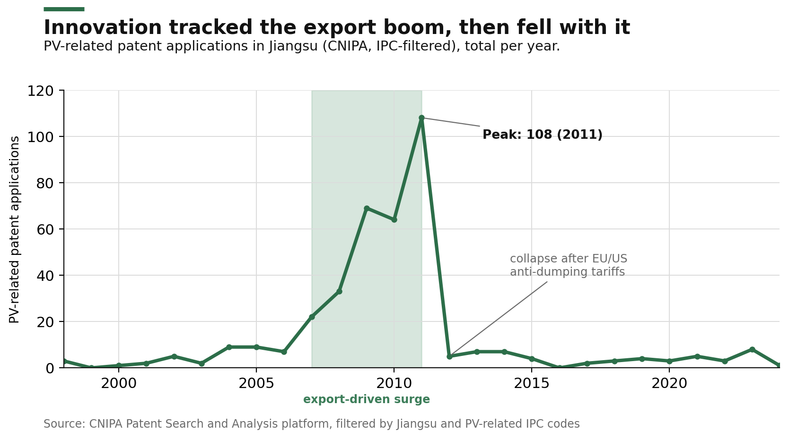
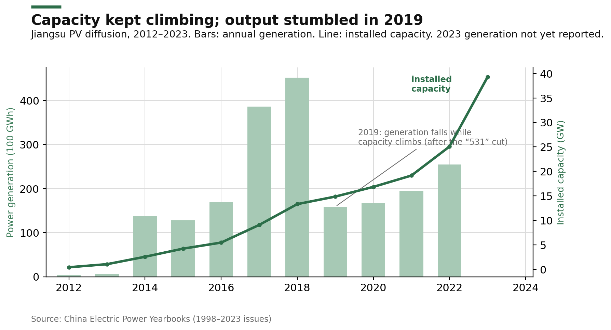
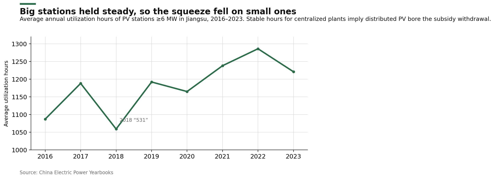

1. The Puzzle, and Three Frames
China's rise to the world's largest solar industry is usually credited to central planning, yet the build-out happened province by province, and the labels scholars reach for disagree about what actually drove it: the commanding state, the firms and localities adapting from below, or some hybrid in which the center sets the bounds and the market fills them. This study uses Jiangsu, one of China's earliest and most dynamic photovoltaic (PV) manufacturing bases, to adjudicate among the three.
Each frame names a different driver, and, more usefully, each implies something we should be able to see in Jiangsu if it is the right account. On the authoritarian-mobilization view, the center commands and provinces and firms execute (Dent 2012); if it holds, diffusion in Jiangsu should track central directives and subsidy timing, expanding when the state signals and contracting when it withdraws. On the adaptive-and-participatory view, localities, firms, and citizens shape policy from below (Huang et al. 2020; Schubert and Heberer 2015); if it holds, local experiments and bottom-up feedback should lead policy rather than follow it. On the hybrid view, the center sets ideological and regulatory bounds while profit and market shocks drive behavior within them (Fischer et al. 2021; Xiang and Lo 2025); if it holds, policy should set the timing and scale of build-out while enterprise viability decides what actually runs.
| Frame | Who drives development | What we should see in Jiangsu if true | Key citation |
|---|---|---|---|
| Authoritarian mobilization (H1) | central-state command | diffusion follows central targets and subsidies; firms rise and fall with directives | Dent 2012 |
| Adaptive / participatory (H2) | localities, firms, citizens from below | local experiments and feedback lead policy; visible bottom-up influence on rule-making | Huang et al. 2020 |
| Hybrid / profit-centered (H3) | center sets bounds, profit and market drive behavior | policy sets timing and scale; enterprise viability decides persistence; correction follows backlash | Fischer et al. 2021 |
One assumption runs under all three labels: that one-party rule defines how governance works. Li (2012) is the one who pulls them apart, distinguishing the resilience of China's institutions from the ruling legitimacy of the Party, and this paper takes up that separation directly, treating the Party's political grip and the way the PV economy is actually steered as two questions, not one.
The fuller debate
The literature offers more vocabulary than these three frames. The mobilization camp runs from fragmented authoritarianism (Lieberthal and Oksenberg 1988) through the regulatory state (Zhang and Yang 2022), technocratic developmentalism (Karagiannis et al. 2021), and state-led finance (Pan et al. 2021). The adaptive camp adds defensive participation (Huang et al. 2020) and evolutionary pro-growth coalitions (Wang et al. 2021). The hybrid camp adds local-state developmentalism (Schubert and Heberer 2015), Su and Tao's (2017) land-based fiscal developmentalism, Han's (2021) fragmentation-and-centralization cycle, Fischer et al.'s (2021) steering theory of hard, indirect, and soft instruments, and Xiang and Lo's (2025) Authoritarian Environmentalism 2.0. Several of these reappear below, at the point where the Jiangsu evidence touches them, rather than as an upfront catalogue. The full survey sits in the working paper.
2. Policy Phases and the Levers of Intervention
Before tracing Jiangsu, it helps to fix the national backdrop and the instruments the state actually had to hand. China's PV policy moved through four phases, each with a different lever and priority.
The instruments themselves operate at four levels, from top-level legal framing down to the financing of individual firms and the coordination across them. Form 1 is a lookup for that structure.
| Level | Main instruments | Function |
|---|---|---|
| Macro: strategic and institutional planning | Renewable Energy Law (2006, amended 2009), Five-Year Plans, the 2020 carbon-neutrality pledge | set strategic priorities and provide long-term legal certainty |
| Meso: market regulation and incentives | feed-in tariffs, Golden Sun (2009), Solar Roofs (2009), VAT rebates, the 531 Policy (2018), the 136 Notice (2025) | shape market behavior through pricing and subsidy reform |
| Micro: operational and resource support | China Development Bank loans, green bonds, SOE-private joint ventures, national R&D programs | fund enterprise operations and relieve capital constraints |
| Cross-level: systemic coordination | joint central-local initiatives, government-guided funds, firm-government cooperation | integrate central planning, local experiment, and firm innovation |
Scholars read these indicators through a common set of proxies: research and innovation (patent counts, R&D), social integration (rural electrification, agrivoltaics), manufacturing capacity, and installed capacity. The debate over whether the state's levers actually drove those indicators is, by now, largely settled in one direction. Yuan et al. (2014) find subsidies amplified volatility while international demand remained decisive; Lin and Luan (2020) find firm-level governance outweighed subsidies in explaining innovation efficiency; Liu et al. (2025) and Xu et al. (2020) find installed capacity tracking energy demand, GDP, and learning rates more than policy incentives. The emerging consensus treats state policy as an enabling framework, with sustained progress resting on firm capability and technological learning.
Yet, as most studies implicitly assume a linear causal link between supportive policy and industrial progress, the actual causal mechanisms remain weakly theorized. Many analyses infer state-driven causality simply from policy presence and industry growth, without disentangling how policies interact with firm behavior and local governance. Even those not directly discussing the government's role treat subsidies as a default promotional power (Song et al. 2022; Wang et al. 2022). That gap, the inferred cause never traced, is what the process-tracing below is built to close.
3. Three Hypotheses, and What Each Predicts
Building on the three frameworks above, the study proposes three alternative explanations for Jiangsu's leading position, each stated so that the evidence in the following sections can confirm or break it.
H1: Authoritarian mobilization
Jiangsu's PV development is primarily driven by centralized coordination and hierarchical implementation. The central government designs targets and allocates resources, provincial authorities translate them into local plans and subsidies, and market and social actors follow state directives. Policy success, under this logic, depends on the coherence of administrative control and fiscal mobilization rather than local autonomy or firm-level initiative. If this hypothesis holds, we should see diffusion track central directives and subsidy schedules closely: build-out accelerating when the state sets targets and releases funds, and stalling when it withdraws them, with little independent movement from firms or markets.
H2: Adaptive and participatory governance
Jiangsu's PV growth benefits more from local experimentation and participatory feedback than from direct central command. Municipal and county governments adapt national directives to local conditions, while enterprises and research institutions shape implementation through consultation, innovation, and market responsiveness, reflecting an adaptive governance process embedded within, but not dictated by, the state hierarchy. If this hypothesis holds, we should see local experiments and bottom-up feedback lead rather than follow central policy: firms, research institutes, and citizens visibly shaping rule-making through consultation or contestation before the policy is set, not only reacting after it.
H3: Hybrid governance
Jiangsu's PV industry reflects a hybrid configuration that fuses hierarchical authority with market adaptation. Central and provincial governments set ideological and regulatory boundaries, framing PV as part of national energy security and environmental narratives, while local governments retain limited autonomy to coordinate with enterprises, investors, and research actors, producing a system where political discipline and market pragmatism coexist. If this hypothesis holds, we should see policy set the timing and scale of build-out while enterprise profitability decides what actually runs: capacity responding to directives and subsidies, but operation, persistence, and innovation tracking market conditions, and corrective regulation arriving after market excesses rather than ahead of them.
4. The Provincial Policy Timeline
A search across six central and provincial agencies for 1997 to 2024 returns a dense record of documents. A representative subset, those repeatedly reissued or explicitly flagged as significant, traces how national strategy was translated into provincial practice.
| Year | Issuer | Document and focus |
|---|---|---|
| 2007 | NDRC | Medium- and Long-Term Plan for Renewable Energy: first national recognition of solar's strategic status, with conservative 2010 and 2020 targets. |
| 2009 | MOF, MOST, NEA | Golden Sun Demonstration Program: 50 to 70 percent capital subsidies for on-grid PV. The strongest central financial signal of the period. |
| 2009 | Jiangsu Gov. | Opinions on Promoting PV in Jiangsu (Su Zheng Ban Fa [2009] No. 85): the earliest provincial document, a 1 RMB/kWh tariff target and a 400 MW goal by 2011. |
| 2011 | Jiangsu Gov. | 12th Five-Year Plan for Strategic Emerging Industries: the provincial blueprint, pairing PV with materials, electronics, and smart grids. |
| 2013 | State Council | Several Opinions on the Healthy Development of the PV Industry: the national corrective during the post-2011 overcapacity crisis, the domestic-market pivot forced by the export collapse. |
| 2018 | NDRC, MIIT | Intelligent PV Development Action Plan: the smart-PV agenda. The same year, the 531 Notice began the subsidy withdrawal. |
| 2021 | NDRC | 14th Five-Year Plan for Renewable Energy: the carbon-peaking roadmap anchoring provincial expansion. |
| 2023 | JDRC | Offshore PV Development Plan (2023 to 2027): the start of Jiangsu's offshore era, leveraging coastal geography. |
| 2024 | JDRC | Notice on Distributed PV Grid Connection: targets for grid capacity and cross-river transmission, with 400 billion RMB of investment for 2024 to 2025. |
Read against the three hypotheses, the timeline is mostly consistent with hierarchy: national documents lead and provincial ones follow and adapt them, which is what H1 would predict and what the dating of the Jiangsu responses to the 2009, 2013, and 2018 national notices shows. But the timeline alone cannot adjudicate, because a document calendar records the state's intentions, not the industry's behavior; whether those directives actually moved diffusion, or merely accompanied it, is a question only the patent, generation, and utilization series below can answer. The timeline, in other words, establishes that the state was present and sequenced; it is the quantitative evidence that tests whether the state was the cause.
Below the provincial level, municipal subsidies fill the gaps: Yangzhong (2015) added 0.3 RMB/kWh for residential rooftops, Suzhou (2015) layered 0.1 RMB/kWh on top of national support, and Wuxi's Xinwu district (2022) offered a one-time 0.1 RMB/W for new rooftop systems, each explicitly aimed at the small, privately initiated installations that national and provincial programs left uncovered. This adaptive, gap-filling role is real, but it operates inside the boundaries the higher levels set, not ahead of them.
5. Evidence I: Innovation Tracked the Export Boom
Patent counts are the cleanest available proxy for innovation. Drawn from the China National Intellectual Property Administration's platform, filtered to Jiangsu and PV-related codes, they are dominated by enterprises rather than universities.1
Innovation rose with export demand, then fell with it.

Jiangsu's patent counts surged sharply between 2007 and 2011, fell steeply in 2012, and never recovered to the previous peak. The pattern echoes Wang and Liu (2024) and Lin and Liu (2024): the global PV market's rapid expansion from 2006 to 2010 pushed Chinese firms to scale capacity for export, and the 2008 financial crisis, followed by the European and American anti-dumping and anti-subsidy tariffs of late 2011, then undercut those exports and forced an industry-wide contraction.
The timing is the argument: innovation rose with export demand and fell with the tariffs of late 2011, not with any domestic policy shift, which is direct evidence against pure authoritarian mobilization (H1) and for the profit-and-market reading (H3). Had the central state been driving the curve, the collapse should have tracked a directive; instead it tracks a market.
- 1. Patent counts capture applications, not grants or quality, and here we use the IPC filter (H01L 31/00, H01L 21/00, C30B 29/00, C01B 33/00)to find out applications directly related to PV industry. Because no public PV-specific R&D figures exist in the National Bureau of Statistics databases, no innovation-efficiency ratio (patents to R&D) is possible; that more precise measure is left for future data.
6. Evidence II: A Boom the Province's Own Books Ignored
Although the 2006 Renewable Energy Law is often treated as the turning point, whether PV became pervasive in Jiangsu then is doubtful. Despite the patent surge from 2007, the Jiangsu section of the 2007 Electric Power Yearbook still left solar out of the tables on generation equipment and installed capacity; the "Major Events" section instead celebrated large fuel-based stations. The 2008 yearbook framed rural electrification through conventional energy, not PV, centering reliability and thermal capacity. In 2009, provincial energy investment went to electrified railways and rural grid enhancement: "electrification" meant transmission infrastructure, not renewable generation. Even though the central Golden Sun program and the provincial Opinions both launched that year, solar still did not appear as an independent category. This absence may imply that, in Jiangsu, electrification denoted infrastructural modernization rather than an energy transition, and that PV generation remained peripheral to provincial energy construction.
This matters for the hypotheses, not just the chronology: patents were already surging in 2007 while the province's own energy statistics still ignored solar, which means the early boom was manufacturing for export, not a state-led domestic build-out. The gap between a booming patent count and an empty provincial capacity table is, in miniature, the case against H1.
Solar appeared as an independent category only in 2012, in both the equipment and installed-capacity tables. By 2014 it grew sharply, surpassing wind and hydro, alongside new emphasis on market supervision, a shift that tracked the central "New Round of Power Sector Reform" (Document No. 9, 2015; the 2014 data appear in the 2015 yearbook).2 In 2015 a PV project entered "Major Events" for the first time, the Huadian (Xinghua) floating solar-hydro base, with 500 MW of capacity. From 2018, large state-owned and private joint projects drew emphasis, and provincial "Major Events" gave way to integrated national records, marking a shift from local to nationally coordinated reporting.
- 2. The China Electric Power Yearbook reports a data year one volume behind its publication year; figures here are labeled by data year.
7. Evidence III: Capacity Climbed, Output Stumbled
Installed capacity is the maximum potential output of all operating PV generators; power generation is the electricity actually produced. Their ratio is utilization, and the gap between them is where the hybrid mechanism shows itself. Generation and capacity data for Jiangsu come from the 2013 to 2021 Electric Power Yearbooks, covering 2012 to 2020.
Capacity kept climbing; output stumbled in 2019.

Domestic expansion did not begin until 2014, coinciding with the 2013 Several Opinions and the 2014 National PV Development Plan, both of which sought to redirect production toward the domestic market after the international downturn caused by the anti-dumping and anti-subsidy measures.
Generation fell sharply in 2019, the year after the 531 cut, even as installed capacity kept rising. This divergence is the hybrid mechanism in one chart: policy set the timing and scale of the build-out, since capacity kept climbing on the strength of earlier approvals, but enterprise viability determined whether the plants actually ran, and once the 531 cut removed the subsidy, generation fell even as capacity rose. That is H3, not H1: the state could command construction but not profitable operation.
Does policy alone, then, determine the life and death of PV projects? Not entirely. As early as 2006 the Renewable Energy Law and its tax incentives and feed-in tariffs were in place, yet domestic diffusion stayed limited. Three observations converge on the same mechanism. The patent curve collapsed with the 2011 tariffs, not with any domestic directive. Generation tracked enterprise viability rather than the installed capacity the state had authorized. And the 2013 and 2014 national documents that redirected the industry inward were themselves responses to the export shock, not its cause. What shifted the trajectory, then, was the collapse of overseas demand after 2011, which forced firms toward the domestic market; subsidies stimulated construction but never bought the technological breakthrough that grid parity required. As Gao Jifan of Trina Solar argued in 2024, and Qu Xiaohua of Atlas in 2025, the real catalyst for sustainable development is technological innovation, not subsidy.
As Hu (2023, 2025) argues under the heading of solar extractivism, and as land-conflict reporting has documented (Wei 2022; Economic Observer Online 2024), the blind expansion of PV into regions poorly suited for solar, often at the cost of farmland, cannot be equated with genuine development. Since around 2013, agrivoltaic projects have spread under a "green agenda," many marked by large-scale land acquisition, exclusionary enforcement, and disregard for local socioecological systems. Local governments, chasing short-term fiscal gains and modernization performance, frequently converted high-quality farmland into PV bases; farmer complaints reached national outlets (Hou 2024), and between 2023 and 2025 the central government and several provinces, Jiangsu among them, banned PV on basic farmland and raised land-use standards.
These corrections mark a shift from encouragement to corrective governance, and they show the state reacting to backlash rather than anticipating it. Farmers were heard only after the damage, through complaint rather than consultation, which is itself the measure of how little formal feedback the system offers, and the clearest place where the H2 prediction fails: participation here is ex post, not built into rule-making.
Utilization hours: who bore the squeeze
Big stations held steady, so the squeeze fell on small ones.

The utilization hours of large centralized stations held roughly steady through the post-531 squeeze. This stability indicates that distributed PV projects were disproportionately affected by the withdrawal of subsidies. The post-2021 policy turn toward integrating centralized and distributed generation then follows, balancing the two segments after the cut had fallen unevenly between them.
8. Synthesis: What Drove Jiangsu's PV Industry
The trajectory suggests that Jiangsu's development was driven less by top-down mobilization or participatory governance, and more by enterprise profit incentives operating within an evolving hybrid policy environment.
Before 2011, H1 finds limited support. Despite the 2006 Renewable Energy Law and a range of subsidies and strategic programs, firms such as Trina Solar and Suntech Power targeted the international market; the state's early frameworks created favorable conditions but did not directly stimulate domestic diffusion. Only when global demand contracted after the 2011 rulings did firms redirect production home, which says market shocks, not administrative command, triggered the shift. Between 2014 and 2018, feed-in tariffs temporarily expanded domestic capacity, but largely as firms pursued subsidy-based profits rather than technological depth; when the 531 cut arrived in 2018, many projects were abandoned. Policy incentives shaped timing and scale, but enterprise profitability determined persistence. Subsidies and directives thus acted as catalysts, not as autonomous engines of growth.
H2 receives limited validation too. Jiangsu's provincial documents show technical understanding and pragmatic concern, but implementation lagged, with county governments expanding to meet fiscal targets, and no evidence indicates meaningful participation from NGOs, communities, or residents in decision-making. Citizens engaged only ex post, through complaints after the environmental and land-use harms were done. Meetings between industry pioneers and officials are recorded, but nothing shows those pioneers shaping policy before it was set.
Taken together, Jiangsu's PV development aligns most closely with the hybrid governance hypothesis (H3): state frameworks set directions and boundaries, but enterprise profit motives and market fluctuations drive actual behavior. The regulatory infrastructure and the corrective governance, the post-2023 land-use restrictions among them, tend to follow complaints rather than anticipate excess.
Policy, in short, functions reactively rather than proactively, and economic pragmatism outweighs ideological mobilization. Sustainable technological progress rests not on command or participation, but on the incentives and capacities of enterprises themselves.
Jiangsu's solar rise, then, was less commanded than permitted: the state drew the lines, and profit decided what grew inside them.
References
The full bibliography is available for download below.
Download full references (PDF) ↓